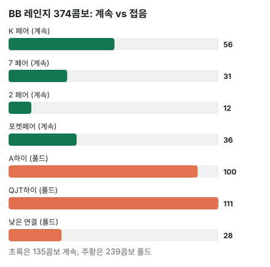

안녕하세요. A08에서 c-bet은 상대가 알파보다 자주 접으면 이득이라고 배웠죠. 그리고 "BB가 이 보드에서 접을 수밖에 없는 핸드가 4분의 1을 넘나?"를 물으라고 했어요.
오늘은 그 질문에 숫자로 답해요. BB 레인지를 가정하고, 보드 위에서 계속할 핸드와 접을 핸드를 묶음별로 하나하나 세어 폴드율을 구해 볼게요.
이 글에서 배울 것
- 가정 레인지를 보드에 올려 짝 맞은 카드별로 계속 콤보를 세는 순서
- 보드와 우리 카드가 지우는 조합까지 챙기는 콤보 세기 요령
- 이 스팟에서 c-bet이 뒤집히는 접는 콤보 기준선
오늘의 핸드
Hero (BTN · 100BB)


프리플랍
SB 0.5BB, BB 1BB → Hero(BTN) 2.5BB 오픈 → SB 폴드 → 상대(BB) 콜
팟 5.5BB
플랍 · 팟 5.5BB


상대 체크 → Hero는 2BB c-bet을 할까? (팟의 36.4%)
Hero는 페어가 없고, 5-6-7 백도어 스트레이트뿐이에요. 오늘도 A08처럼 콜 뒤·체크 뒤 기회는 0으로 봐요.
오늘 가정: c-bet이 콜을 받으면 이후에 포기한다. BB는 콜 아니면 폴드(체크레이즈 없음).
결론부터 말할게요. 오늘 가정한 상대라면 c-bet이 이득입니다.
남은 베팅이 있어 실제 결과는 달라질 수 있어요. 그래서 오늘은 금액(EV) 대신 상대 폴드율 vs 알파로만 판정해요.
1단계. 몇 % 접어야 본전인가 (알파)
알파 = 2(벳) ÷ (5.5(팟) + 2(벳)) = 2 ÷ 7.5 = 26.7%
A08에서는 팟을 6BB로 어림해 4번 중 1번이었죠. 실제 팟 5.5BB로 하면 같은 2BB가 팟의 3분의 1보다 조금 커서, 알파도 26.7%로 조금 올라가요.
2단계. BB 레인지를 콤보로 세기 (가정 레인지 기준)
1) BB가 들고 있을 핸드
버튼 오픈에 BB가 콜하는 핸드를 이렇게 가정할게요(연습용, 솔버 레인지 아님).
22-99, A2s-A9s, K2s-KQs, Q6s+, J7s+, T7s+, 97s+, 86s+, 75s+, 64s+, 54s, A2o-ATo, K9o-KJo, Q9o+, J9o+, T9o, 98o
TT 이상·AJ 이상·KQo·ATs는 이 연습 레인지에서 뺐어요(3벳하거나 다르게 쓴다고 본 핸드).
2) 보드와 Hero 카드 지우기
보드 K♠ 7♦ 2♣와 Hero 6♥·5♥는 BB가 들 수 없어요. 그걸 지우고 남은 조합은 374콤보예요.
💡 빨리 세는 팁 - K 오프수트(K9o 등): K는 3장 남았고, K마다 무늬가 다른 상대 카드 3장 → 3 × 3 = 9가지 - K 수딧: 보통은 무늬 칸이 3개(K♠가 보드)라 3가지. 그런데 같은 무늬의 상대 카드가 보드나 Hero 손에 또 있으면 한 칸 더 빠져요. K2s(2♣가 보드)·K7s(7♦가 보드)·K6s·K5s(Hero의 6♥·5♥)는 2가지예요 - 포켓페어: 22·77·66·55는 한 장이 보드나 Hero 손에 있어 3가지, 나머지는 6가지(I32의 6 → 3 → 1)
3) 계속할 핸드의 기준
BB가 c-bet에 이렇게 대응한다고 가정해요.
- 계속: 페어 이상, 또는 다음 한 장에 스트레이트·플러시가 되는 카드가 4장 이상인 드로우
- 폴드: 나머지
4) 계속하는 묶음 세기
| 묶음 | 어떤 핸드 | 콤보 |
|---|---|---|
| K와 짝 | K2s~KQs, K9o~KJo | 56 |
| 7과 짝 | A7, Q7s, J7s, T7s, 97s, 87s, 76s, 75s | 31 |
| 2와 짝 | A2s, A2o | 12 |
| 포켓페어 | 22~99 | 36 |
| 드로우 | — | 0 |
| 계속 합계 | 135 |
드로우가 0인 게 눈에 띄죠. 무늬가 다 달라 플러시 드로우가 없고, K·7·2가 서로 멀어서 이 레인지에는 한 장으로 완성되는 스트레이트 드로우도 없어요.
5) 접는 묶음 세기
| 묶음 | 어떤 핸드 | 콤보 |
|---|---|---|
| A 하이 | A3~A6·A8·A9(수딧·오프), ATo | 100 |
| Q·J·T 하이 | Q6s, Q8s~QJs, Q9o~QJo, J8s~JTs, J9o·JTo, T8s·T9s, T9o | 111 |
| 낮은 연결 | 98s, 98o, 86s, 65s, 64s, 54s | 28 |
| 폴드 합계 | 239 |
135 + 239 = 374, 빠진 조합이 없어요.
BB 폴드율 = 239 ÷ 374 = 63.9%

3단계. 비교
| 숫자 | |
|---|---|
| 알파(필요 폴드율) | 26.7% |
| BB 폴드율(가정) | 63.9% |
폴드율이 알파보다 훨씬 높아서 c-bet이 이득이에요.
같은 걸 BB 쪽에서 말하면, BB가 지키는 비율은 36.1%로 MDF 73.3%의 절반쯤이에요. MDF = 1 − 알파라서 이건 위 비교를 뒤집어 말한 같은 이야기예요. 하나만 봐도 돼요.
왜 그럴까: 폴드율을 정하는 건 "큰 묶음 두 개"예요
계속 쪽은 K 짝이 절반 가까이
계속하는 135콤보 중 K와 짝 56콤보가 가장 커요. 이 연습 레인지는 KQo를 뺐고 K 오프수트를 K9o~KJo만 넣어서, K 짝이 이 정도에 머물렀어요. BB 레인지에 K가 든 핸드가 적을수록 이 보드에서 지킬 핸드가 줄어요.
접는 쪽은 A 하이와 Q·J·T 하이
접는 239콤보 중 A 하이 100, Q·J·T 하이 111, 둘이 거의 다예요. BB가 프리플랍에 콜한 A x·브로드웨이 핸드가 이 보드에서 페어를 못 만든 거예요.
이게 무슨 뜻이냐면
폴드율 63.9%는 "BB가 겁이 많아서"가 아니라, BB 레인지의 큰 묶음(A x·브로드웨이)이 이 보드를 비켜 갔기 때문이에요. 그래서 상대가 A 하이로도 버틴다면 가장 큰 묶음 하나가 계속 쪽으로 옮겨 가면서 숫자가 크게 바뀌어요(아래 질문 절).
자주 하는 실수
실수 1. 수딧 콤보를 무조건 3(또는 4)으로 세기 K 수딧을 다 3으로 세면 K2s·K7s·K6s·K5s를 하나씩 더 세게 돼요. 이 네 가지에서만 네 조합이 부풀어요. 수딧은 같은 무늬 카드가 보드나 우리 손에 있는지 한 번 더 봐요.
실수 2. 합계가 레인지 전체와 맞는지 확인 안 하기 계속 135와 폴드 239를 따로 세고 나서 더해 374가 되는지 보지 않으면, 묶음 하나를 통째로 빠뜨려도 몰라요. 오늘이라면 J9o+에 든 JTo를 빠뜨리기 쉬워요. 계속 + 폴드 = 전체를 꼭 맞춰요.
실수 3. 알파 비교와 MDF 비교를 서로 다른 근거로 쓰기 "폴드율이 알파를 넘었고, 게다가 MDF도 못 지켰으니 두 배로 확실"처럼 생각하는 실수예요. MDF = 1 − 알파라서 둘은 같은 부등식이에요. 근거는 하나예요.
"BB가 A 하이로도 콜하면요?"
좋은 질문이에요. 그러면 접는 묶음에서 A 하이 100콤보가 계속 쪽으로 옮겨 가요. 이미 짝이 맞은 A2·A7은 원래 계속 쪽이니, 옮겨 가는 건 A3~A6·A8~AT예요.
그러면 접는 건 Q·J·T 하이와 낮은 연결만 남아 폴드율이 크게 내려가요. 이 계산의 핵심은 숫자 하나보다 "계속할 핸드를 어떻게 정했나"예요. 기준이 바뀌면 같은 방법으로 묶음을 옮겨 다시 세면 돼요.
숫자가 뒤집히는 지점
이 스팟의 기준선은 접는 콤보 수예요. 알파가 26.7%이니, 접는 콤보가 374콤보의 26.7%(4분의 1 남짓) 아래로 내려가면 맞은 게 없는 2BB c-bet은 손해예요. 오늘은 239콤보라 여유가 커요.
선생님의 한마디
테이블에서 몇 초 안에 어림할 때는 이 순서로 봐요.
- 보드가 마른가: 무늬가 다 다르고 카드끼리 멀면 드로우가 거의 없어요. 젖은 보드면 드로우 묶음부터 따로 떠올리기
- 마른 보드라면 보드 높은 카드와 짝인 핸드 + 포켓페어만 먼저 세기. 오늘이면 K x와 포켓페어
- 그게 레인지의 4분의 3에 한참 못 미치면 작은 c-bet은 이득 쪽, 가까우면 직접 세어 확인
연습 문제
학습툴에는 알파를 직접 넣는 칸이 없어요. 홀덤학습 팟 오즈 퀴즈 Lv.5(블러프 본전)로 같은 계산을 연습해 보세요. 레인지 콤보 세기는 직접 해요.
문제 1. 같은 보드·같은 가정에서 BB 폴드율이 63.9%로 그대로라면, Hero는 맞은 게 없는 핸드로 c-bet을 최대 얼마까지 키워도 본전 이상일까요?
정답 보기
알파가 폴드율 63.9%와 같아지는 크기가 최대예요. 벳 ÷ (5.5 + 벳) = 239/374가 되려면, 벳 = 5.5 × 239 ÷ 135 = 9.74BB. 확인: 알파 = 9.74 ÷ (5.5 + 9.74) = 63.9%. 팟보다 큰 오버벳까지 본전 이상이에요. 다만 실제로는 크기를 키우면 BB가 덜 접을 수 있으니, 폴드율이 그대로라는 가정 안에서만 맞는 상한이에요.
문제 2. 이번엔 플랍 T♥ 9♥ 7♣. 6♥5♥를 이 보드에 두면 6-7-9-T 스트레이트 드로우에 하트 플러시 드로우까지 생기니, 맞은 게 없는 핸드로 A♣2♦를 들었다고 할게요. 같은 BB 레인지·같은 계속 기준, c-bet 2BB라면? 어느 묶음이 늘어나는지부터 생각해 보세요.
정답 보기
늘어나는 묶음: T·9·7과 짝이 맞는 핸드(T9·T7s·97s·A9·A7 등)와 포켓페어, Q8s 같은 스트레이트 드로우(8이 든 핸드 중 J8·86s는 이미 스트레이트), 하트 두 장 수딧의 플러시 드로우. 계산하면 레인지 338콤보 중 페어 이상 190, 드로우 93 → 폴드 55콤보, 폴드율 = 55 ÷ 338 = 16.3%. 알파 26.7%보다 낮아서 손해예요. BB가 콜한 중간 카드·수딧 커넥터가 이 보드에 페어와 드로우로 잔뜩 맞아요.
핵심 정리
- 폴드율은 가정 레인지 → 보드·우리 카드 지우기 → 계속 기준 → 묶음별로 세기 순서로 구해요
- 수딧은 같은 무늬 카드가 보드나 우리 손에 있으면 한 칸 더 빠져요
- 계속 + 폴드 = 전체로 빠진 묶음이 없는지 확인해요
- 폴드율은 레인지의 큰 묶음이 보드에 맞았나가 정해요. 오늘은 A 하이·Q·J·T 하이가 통째로 비켜 갔어요
- 알파 비교와 MDF 비교는 같은 말이에요
정리하며
오늘은 K♠ 7♦ 2♣에서 6♥5♥로 2BB c-bet을 할지, BB 레인지를 직접 세어 따졌어요.
계속하는 쪽은 K 짝 56·7 짝 31·2 짝 12·포켓페어 36으로 135콤보, 접는 쪽은 A 하이 100·Q·J·T 하이 111·낮은 연결 28로 239콤보였죠. 폴드율 63.9%가 알파 26.7%를 훌쩍 넘어서 c-bet이 이득이었고, 접는 콤보가 374콤보의 26.7% 아래로 내려가야 뒤집힌다는 기준선도 얻었어요.
실전에서는 마른 보드라면 "보드 높은 카드와 짝인 핸드 + 포켓페어가 레인지에서 얼마나 되나"부터, 젖은 보드라면 드로우 묶음까지 더해서 어림해 보세요.
다음 글 A10에서는 c-bet을 떠나 SPR(남은 스택 대 팟 비율)을 다뤄요. 플랍에서 "이 핸드로 올인까지 갈까"를 미리 정하는 숫자예요.
AI 작성 · 숫자는 계산 검증 (콤보는 실제 카드로 하나씩 셈) · 가정 레인지 기준 (솔버 결과 아님) · 콜 받으면 포기한다고 가정 · 이번 한 번의 결정 기준